#Data Manipulation
library(tidyverse)
library(sf)
library(units)
library(flextable)
library(rmapshaper)
#Data Loading
library(USAboundaries)
library(USAboundariesData)
library(rnaturalearth)
library(AOI)
# Visualization
library(gghighlight)
library(ggrepel)
library(knitr)
library(kableExtra)Lab 3: National Dam Inventory
Tesselations, Point-in-Polygon

Background
In this lab I explored the impacts of tessellated surfaces and the modifiable areal unit problem (MAUP) using the National Dam Inventory maintained by the United States Army Corps of Engineers (USACE). Doing this required repetitive tasks that can be written as functions and careful consideration of feature aggregation/simplification, spatial joins, and data visualization. The end goal is to visualize the distribution of dams and their purposes across the country.
This Lab covers 4 main skills:
- Tessellating Surfaces to discritized space
- Geometry Simplification: to expedite expensive intersections
- Writing Functions to expedite repetitious reporting and mapping tasks
- Point-in-Polygon counts to aggregate point data ****
Libraries
Question 1:
Here five tessellated surfaces are prepared from CONUS and a function is written to plot them in a descriptive way.
Step 1.1
First, we need a spatial file of CONUS counties. For future area calculations we want these in an equal area projection (EPSG:5070).
To achieve this:
get an sf object of US counties (AOI::aoi_get(state = “conus”, county = “all”))
transform the data to EPSG:5070
counties <- AOI::aoi_get(state = "conus", county = "all") %>%
st_transform(crs = 5070)ggplot(data = counties) +
geom_sf()Step 1.2
For triangle based tessellations I need point locations to serve as the “anchors”.
To achieve this:
Generate county centroids using st_centroid
Since, I can only tessellate over a feature I need to combine or union the resulting 3,108 POINT features into a single MULTIPOINT feature
Since these are point objects, the difference between union/combine is mute.
counties_cent <- counties %>%
st_centroid() %>%
st_union()Step 1.3
Tessellations/Coverage’s describe the extent of a region with geometric shapes, called tiles, with no overlaps or gaps. Tiles can range in size, shape, area and have different methods for being created. Some methods generate triangular tiles across a set of defined points (e.g. voroni and delauny triangulation). Others generate equal area tiles over a known extent (st_make_grid). For this lab, I will create surfaces of CONUS using using 4 methods, 2 based on an extent and 2 based on point anchors:
Tessellations:
st_voronoi: creates voroni tessellation
st_triangulate: triangulates set of points (not constrained)
Coverage’s: - st_make_grid: Creates a square grid covering the geometry of an sf or sfc object
st_make_grid(square = FALSE): Create a hexagonal grid covering the geometry of an sf or sfc object
The side of coverage tiles can be defined by a cell resolution or a specified number of cell in the X and Y direction
For this step:
Make a voroni tessellation over your county centroids (MULTIPOINT)
Make a triangulated tessellation over your county centroids (MULTIPOINT)
Make a gridded coverage with n = 70, over your counties object
Make a hexagonal coverage with n = 70, over your counties object
In addition to creating these 4 coverage’s, add an ID to each tile. To do this:
add a new column to each tessellation that spans from 1:n().
Remember that ALL tessellation methods return an sfc GEOMETRYCOLLECTION, and to add attribute information - like the ID - I have to coerce the sfc list into an sf object (st_sf or st_as_sf)
Last, ensure that our surfaces are topologically valid/simple:
Pass the surfaces through st_cast.
Casting an object explicitly (e.g. st_cast(x, “POINT”)) changes a geometry
If no output type is specified (e.g. st_cast(x)) then the cast attempts to simplify the geometry
If this step is not performed, an error may occur unexpected “TopologyException”
#Tesselations
vor_counties <- counties_cent %>%
st_voronoi() %>%
st_cast() %>%
st_as_sf() %>%
mutate(id = 1:n())
tri_counties <- counties_cent %>%
st_triangulate() %>%
st_cast() %>%
st_as_sf() %>%
mutate(id = 1:n())
sqgrid_counties <- counties_cent %>%
st_make_grid(n = 70) %>%
st_as_sf() %>%
mutate(id = 1:n())
hexgrid_counties <- counties_cent %>%
st_make_grid(square = FALSE, n = 70) %>%
st_as_sf() %>%
mutate(id = 1:n())Step 1.4
If tessellations are plotted, the triangulated surfaces can be seen to produce regions far beyond the boundaries of CONUS. Cut these boundaries to the CONUS border.
To do this, call on st_intersection, but first, a geometry of CONUS erves as the differencing feature. This is done by union-ing the existing county boundaries.
u_counties <- counties %>%
st_union()Step 1.5
With a single feature boundary, I must carefully consider the complexity of the geometry. Remember, the more points the geometry contains, the more computations needed for spatial predicates our differencing. For a task like this, I do not need a finely resolved coastal boarder.
To achieve this:
Simplify the unioned border using the Visvalingam algorithm provided by rmapshaper::ms_simplify.
Choose what percentage of vertices to retain using the keep argument and work to find the highest number that provides a shape you are comfortable with for the analysis.
Once happy with the simplification, use the mapview::npts function to report the number of points in the original object, and the number of points in the simplified object
How many points were removed? What are the consequences of doing this computationally?
Finally, use the simplified object to crop the two triangulated tessellations with st_intersection:
simp_counties <- u_counties %>%
ms_simplify(keep = 0.01)
ggplot() +
geom_sf(data=simp_counties) +
geom_sf(data = u_counties) +
theme_void()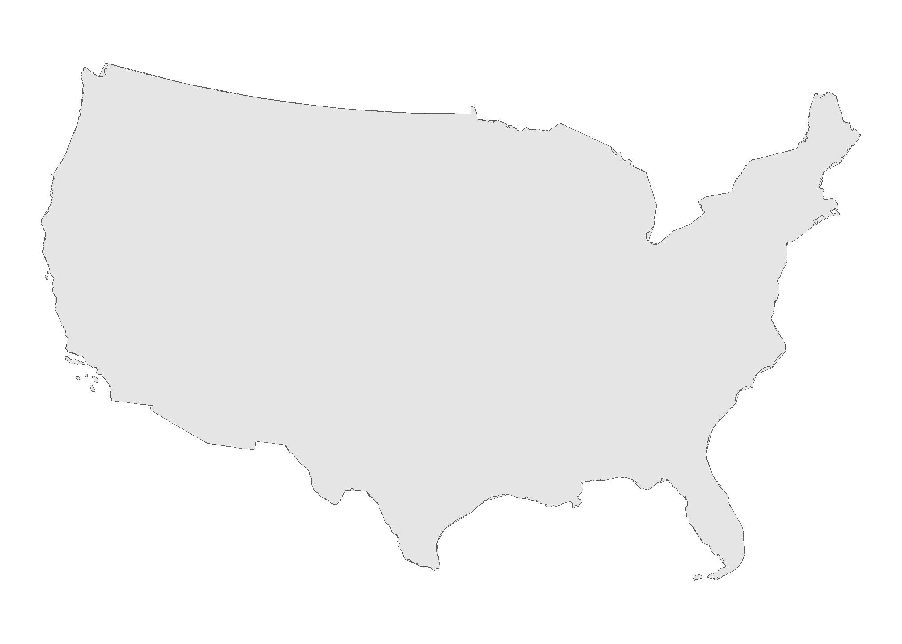
mapview::npts(u_counties, by_feature = FALSE)[1] 11292mapview::npts(simp_counties, by_feature = FALSE)[1] 114vor_conus <- st_intersection(vor_counties, simp_counties)
tri_conus <- st_intersection(tri_counties, simp_counties)
sq_conus <- st_intersection(sqgrid_counties, simp_counties)
hex_conus <- st_intersection(hexgrid_counties, simp_counties)Step 1.6
The last step is to plot the tessellations. I don’t want to write out 5 ggplot codes (or mindlessly copy and paste 😄)
Instead make a function that takes an sf object as arg1 and a character string as arg2 and returns a ggplot object showing arg1 titled with arg2.
For this function:
arg1 should take an sf object
arg2 should take a character string that will title the plot
the code should follow a standard ggplot practice where data is arg1, and the title is arg2
The function should also enforce the following:
a white fill a navy border a size of 0.2 `theme_void`` a caption that reports the number of features in arg1 You will need to paste character strings and variables together.
tessplot <- function(obj, char){
ggplot(data = obj) +
geom_sf(fill = 'white', color = 'navy', size = 0.2) +
labs(title = char,
caption = paste('Number of points: ', mapview::npts(obj))) +
theme_void()
}Step 1.7
Use your new function to plot each of your tessellated surfaces and the original county data (5 plots in total):
tessplot(counties, char = 'CONUS Counties')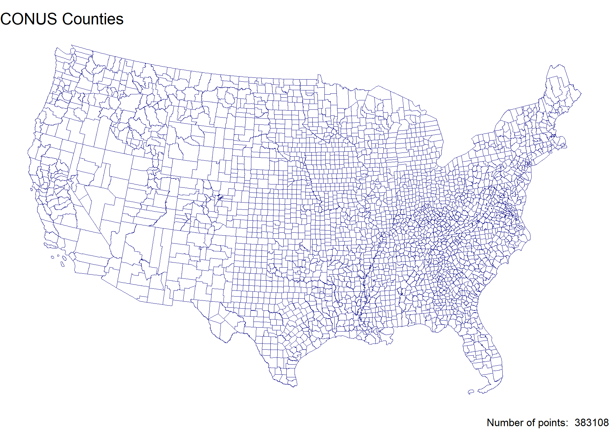
tessplot(vor_conus, char = 'Voronoi Tesselation of CONUS Counties')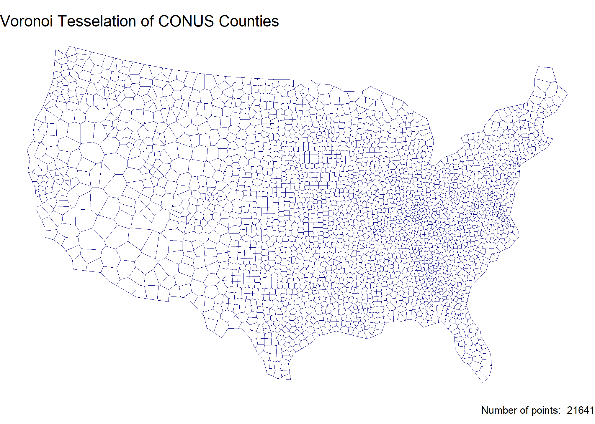
tessplot(tri_conus, char = 'Triangulated Tesselation of CONUS Counties')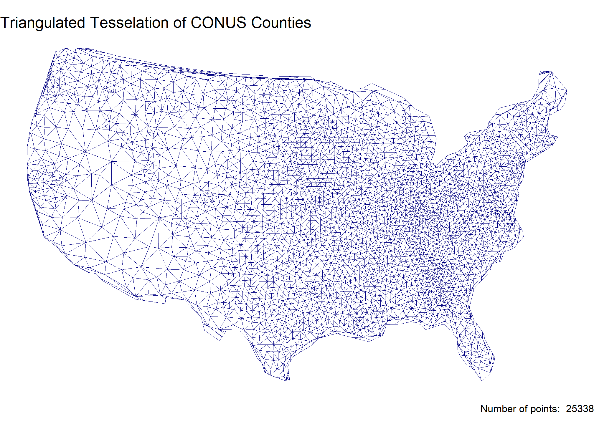
tessplot(sq_conus, char = 'Square Coverage of CONUS Counties')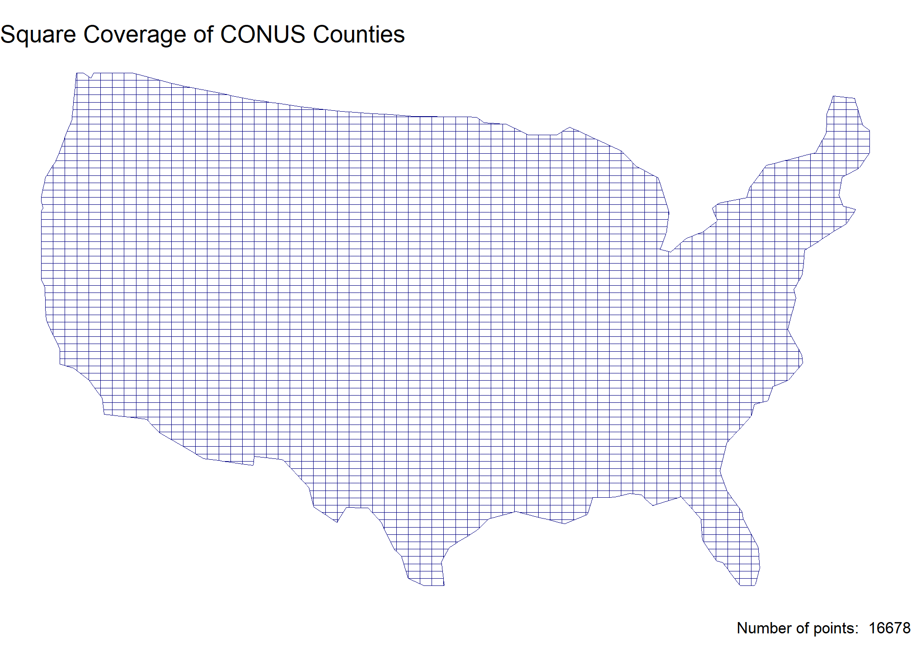
tessplot(hex_conus, char = 'Hex Coverage of CONUS Counties')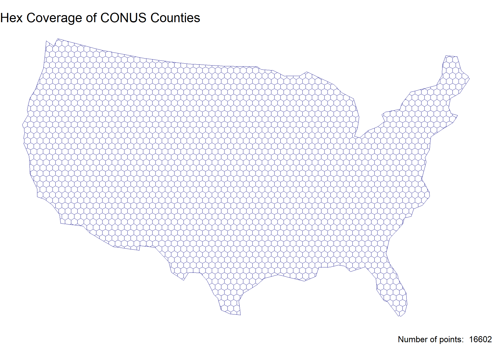
Question 2:
In this question, I write out a function to summarize the tessellated surfaces.
Step 2.1
First, I need a function that takes a sf object and a character string and returns a data.frame.
For this function:
The function name can be anything, arg1 should take an sf object, and arg2 should take a character string describing the object
calculate the area of arg1; convert the units to km2; and then drop the units
Next, create a data.frame containing the following:
text from arg2 the number of features in arg1 the mean area of the features in arg1 (km2) the standard deviation of the features in arg1 the total area (km2) of arg1 Return this data.frame
tessdf <- function(obj, char) {
mean_area <- mean(st_area(obj)) %>%
set_units(km^2) %>%
drop_units() %>%
round(digits = 1)
sdev <- sd(st_area(obj))/(1000000)
tot_area <- sum(st_area(obj)) %>%
set_units(km^2) %>%
drop_units()
df_obj <- data.frame(
'Description' = char,
'Elements' = mapview::npts(obj),
'Mean Area (km^2)' = mean_area,
'Std Dev. (km^2)' = sdev,
'Total Area (km^2)' = tot_area,
check.names = FALSE
)
return(df_obj)
}Step 2.2
Use the new function to summarize each of the tesselations and the original counties.
df_count <- tessdf(obj = counties, char = 'counties')
df_vor <- tessdf(obj = vor_conus, char = 'voronoi')
df_tri <- tessdf(obj = tri_conus, char = 'triangulations')
df_sq <- tessdf(obj = sq_conus, char = 'square grid')
df_hex <- tessdf(obj = hex_conus, char = 'hex grid')Step 2.3
Multiple data.frame objects can bound row-wise with bind_rows into a single data.frame
df_total <- bind_rows(df_count,
df_vor,
df_tri,
df_sq,
df_hex)Step 2.4
Once the 5 summaries are bound (2 tessellations, 2 coverage’s, and the raw counties) print the data.frame as a nice table using knitr/kableExtra.
kbl(df_total, caption = 'Information for Each Coverage') %>%
kable_classic()| Description | Elements | Mean Area (km^2) | Std Dev. (km^2) | Total Area (km^2) |
|---|---|---|---|---|
| counties | 383108 | 2605.1 | 3443.7121 | 8096496 |
| voronoi | 21641 | 2601.7 | 2908.2465 | 8086096 |
| triangulations | 25338 | 1290.7 | 1599.3152 | 7999856 |
| square grid | 16678 | 2433.9 | 486.3631 | 8063384 |
| hex grid | 16602 | 3374.4 | 726.0456 | 8084951 |
Step 2.5
Comment on the traits of each tessellation. Be specific about how these traits might impact the results of a point-in-polygon analysis in the contexts of the modifiable areal unit problem and with respect computational requirements.
The Voronoi tesselations keeps the mean area of each county the most similar to the original counties object. The square grid has the lowest standard deviation for each county and the hex grid has the fewest elements and therefore the least calculation time involved.
The hex grid and Voronoi tesselation retain the most total area for similarity to the original counties object. ****
Question 3:
The data analyzed in this lab is from USACE National Dam Inventory (NID). This dataset documents ~91,000 dams in the United States and a variety of attribute information including design specifications, risk level, age, and purpose.
For the remainder of this lab I analyzed the distributions of these dams (Q3) and their purpose (Q4) by using a point-in-polygon analysis.
Step 3.1
Find, download, and manage raw data: While the raw NID data is no longer easy to get with the transition of the USACE services to ESRI Features Services, the data is staged in the resources directory of this class.
- Read in the data
- Remove rows that don’t have location values (!is.na())
- Convert the data.frame to a sf object by defining the coordinates and CRS
- Transform the data to a CONUS AEA (EPSG:5070) projection - matching your tessellation
- Filter to include only those within your CONUS boundarydams <- readr::read_csv('C:/Users/horre/Desktop/csu_523c/data/NID2019_U.csv')
usa <- AOI::aoi_get(state = "conus") %>%
st_union() %>%
st_transform(5070)
dams2 <- dams %>%
filter(!is.na(LATITUDE)) %>%
st_as_sf(coords = c("LONGITUDE", "LATITUDE"), crs = 4236) %>%
st_transform(5070) %>%
st_filter(usa)Step 3.2
Following the in-class examples develop an efficient point-in-polygon function that takes:
- points as arg1
- polygons as arg2
- The name of the id column as arg3The function should make use of spatial and non-spatial joins, sf coercion and dplyr::count. The returned object should be input sf object with a column - n - counting the number of points in each tile.
pip_dams <- function(polygon, points, var){
coverage_join <- st_join(polygon, points) %>%
st_drop_geometry() %>%
count(get(var)) %>%
setNames(c(var, 'n')) %>%
left_join(polygon, by = var) %>%
st_as_sf()
}Step 3.3
Apply your point-in-polygon function to each of your five tessellated surfaces where:
- Your points are the dams
- Your polygons are the respective tessellation
- The id column is the name of the id columns you defined.
counties_n <- pip_dams(polygon = counties, points = dams2, var = 'fip_code')
vor_n <- pip_dams(polygon = vor_conus, points = dams2, var = 'id')
tri_n <- pip_dams(polygon = tri_conus, points = dams2, var = 'id')
sq_n <- pip_dams(polygon = sq_conus, points = dams2, var = 'id')
hex_n <- pip_dams(polygon = hex_conus, points = dams2, var = 'id')Step 3.4
I continue automating repetitive tasks through function creation. This time I make a new function that extends the previous plotting function.
For this function:
- The name can be anything
- arg1 should take an sf object, and arg2 should take a character string that will title the plot
- The function should also enforce the following:
the fill aesthetic is driven by the count column n
the col is NA
the fill is scaled to a continuous viridis color ramp
theme_void
a caption that reports the number of dams in arg1 (e.g. sum(n))You will need to paste character stings and variables together.
pip_plot <- function(sf, char){
ggplot(data = sf) +
geom_sf(aes(fill = n), color = NA) +
scale_fill_viridis_c() +
labs(title = char,
caption = paste('Total dams: ', sum(sf$n))) +
theme_void() +
theme(legend.position = 'bottom')
}Step 3.5
Apply the plotting function to each of the 5 tessellated surfaces with Point-in-Polygon counts:
pip_plot(sf = counties_n, char = 'Number of dams per County')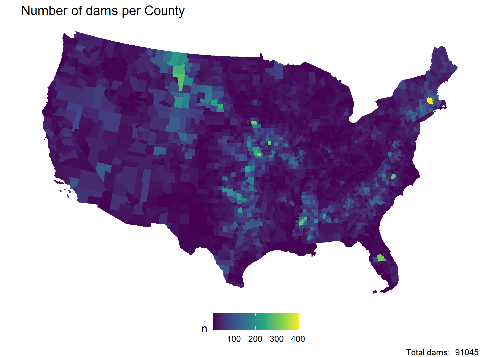
pip_plot(sf = vor_n, char = 'Number of dams per Voronoi County')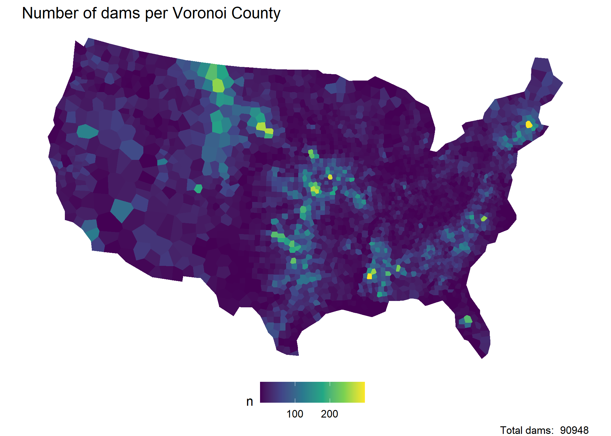
pip_plot(sf = tri_n, char = 'Number of dams per Triangulated County')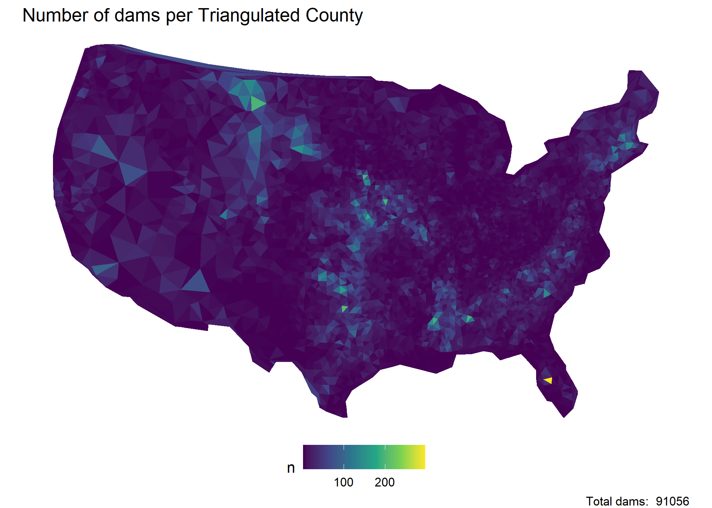
pip_plot(sf = sq_n, char = 'Number of dams per Square Grid')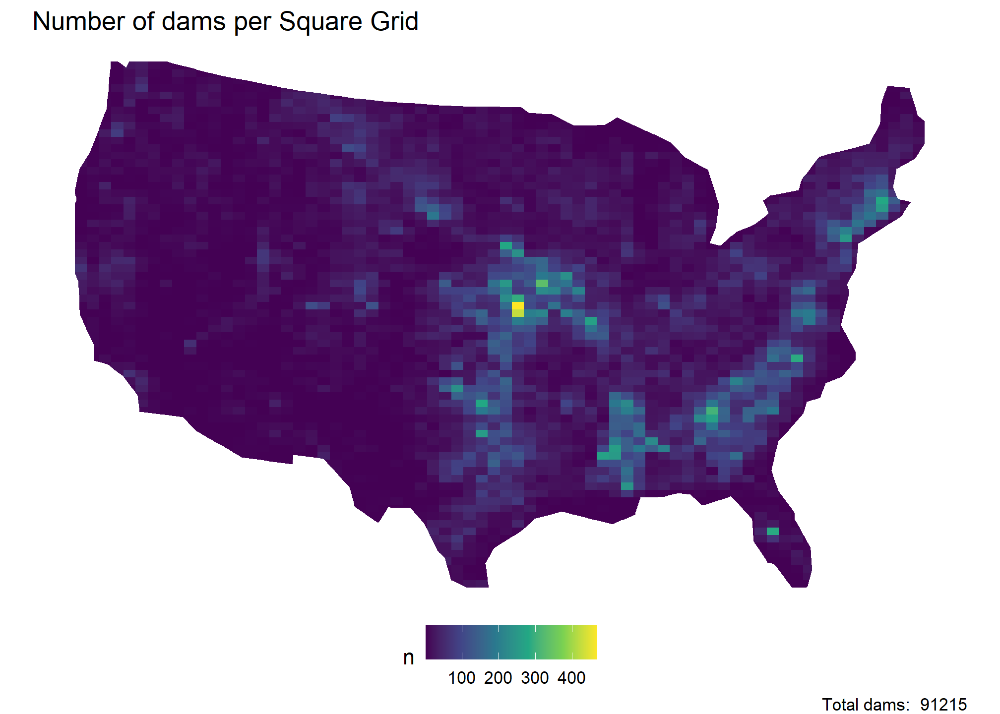
pip_plot(sf = hex_n, char = 'Number of dams per Hex Grid')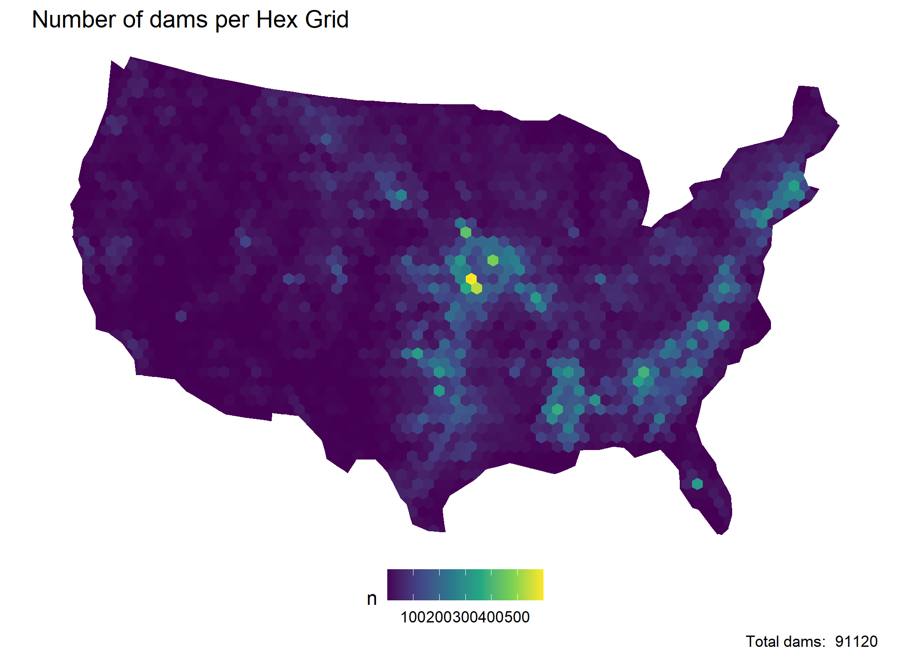
Step 3.6
Comment on the influence of the tessellated surface in the visualization of point counts. How does this relate to the MAUP problem. Moving forward you will only use one tessellation, which will you chose and why?
Changing the size or area that the number of dams are counted changes the mean or count of dams in a specific region. While there are the same number of total dams in each tesselated surface model, the voronoi and triangulation models decrease the number of individual units and change the area of those. The hex and square grids decrease the number of units and make each unit the same area.
I will use the Voronoi Tesselation moving forward because it there is the total area and mean area is most similar to the original counties data set and has fewer units than the triangulation and is more representative to true counties than the square or hex grid.
Question 4:
The NID provides a comprehensive data dictionary here. Dam purposes are designated by a character code. Dams can have multiple purposes. In these cases, the purpose codes are concatenated in order of decreasing importance. For example, SCR would indicate the primary purposes are Water Supply, then Flood Control, then Recreation.
A standard summary indicates there are over 400 unique combinations of dam purposes. By storing dam codes as a concatenated string, there is no easy way to identify how many dams serve any one purpose… for example where are the hydro electric dams?
To overcome this data structure limitation, identify how many dams serve each purpose by splitting the PURPOSES values and tabulating the unlisted results as a data.frame. Effectively this is double/triple/quadruple counting dams bases on how many purposes they serve.
Step 4.1
Create point-in-polygon counts for at least 4 of the above dam purposes.
Use grepl to filter the complete dataset to those with your chosen purpose.
grepl returns a boolean if a given pattern is matched in a string.
grepl is vectorized so can be used in dplyr::filter
For the analysis, I chose four of the codes. Then create a subset of dams that serve that purpose using dplyr::filter and grepl for each purpose.
Reasoning - I a choosing flood control (C), hydroelectric dams (H), navigation (N), and fish and wildlife dams (F). I chose these because I think they represent some common, and some unique purposes for dams, and hopefully do not overlap too much.
Finally, use the point-in-polygon function to count each subset across your elected tessellation
purpose <- c('C', 'H', 'N', 'F')
dams3 <- dams2 %>%
mutate(PURPOSES = strsplit(PURPOSES, ""))
dams_C <- dams3 %>%
filter(grepl('C', PURPOSES) == TRUE)
dams_H <- dams3 %>%
filter(grepl('H', PURPOSES) == TRUE)
dams_N <- dams3 %>%
filter(grepl('N', PURPOSES) == TRUE)
dams_F <- dams3 %>%
filter(grepl('F', PURPOSES) == TRUE)pip_C <- pip_dams(polygon = vor_conus, points = dams_C, var = 'id')
pip_H <- pip_dams(polygon = vor_conus, points = dams_H, var = 'id')
pip_N <- pip_dams(polygon = vor_conus, points = dams_N, var = 'id')
pip_F <- pip_dams(polygon = vor_conus, points = dams_F, var = 'id')Step 4.2
Now use the plotting function from Q3 to map the counts
Use gghighlight to only color the tiles where the count (n) is greater then the (mean + 1 standard deviation) of the set
Since the plotting function returns a ggplot object already, the gghighlight call is added “+” directly to the function.
The result of this exploration is to highlight the areas of the country with the most
pip_plot(sf = pip_C, char = 'Flood Control Dams Across the US') +
gghighlight(n > (mean(n)+sd(n)))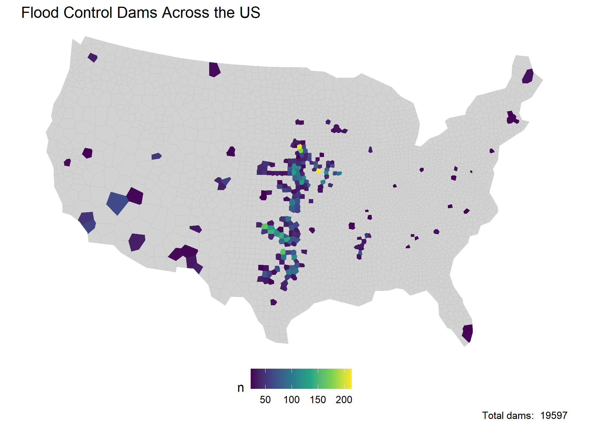
pip_plot(sf = pip_H, char = 'Hydroelectric Dams Across the US') +
gghighlight(n > (mean(n)+sd(n)))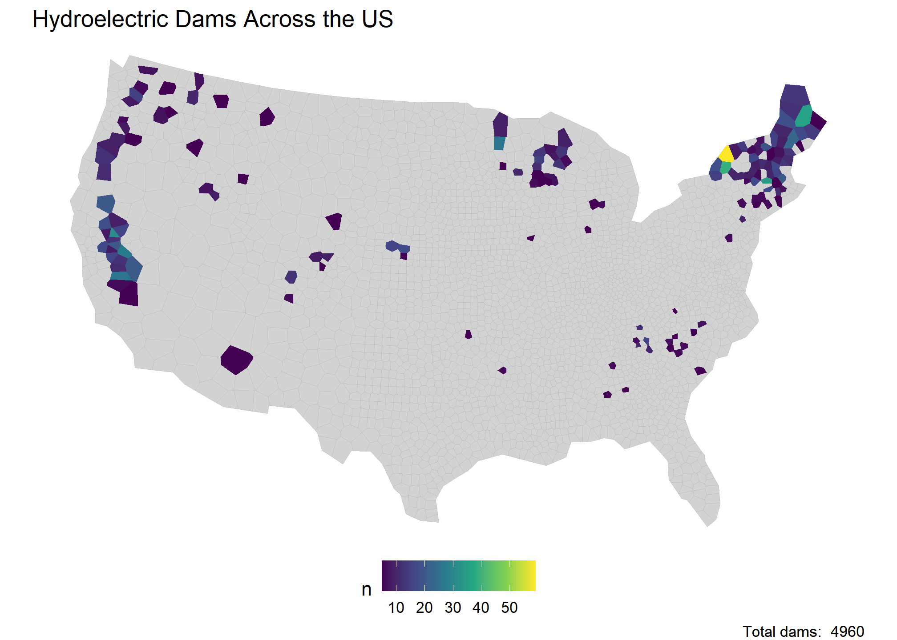
pip_plot(sf = pip_N, char = 'Navigation Dams Across the US') +
gghighlight(n > (mean(n)+sd(n)))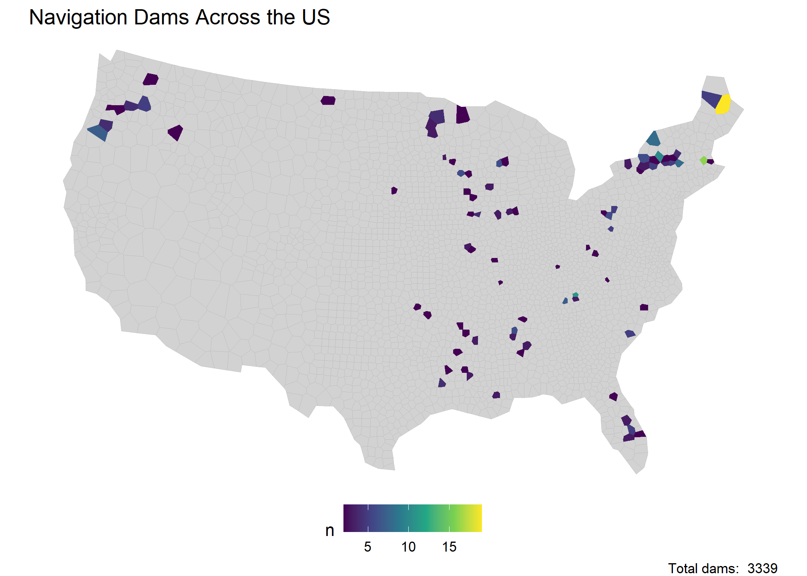
pip_plot(sf = pip_F, char = 'Fish and Wildlife Dams Across the US') +
gghighlight(n > (mean(n)+sd(n)))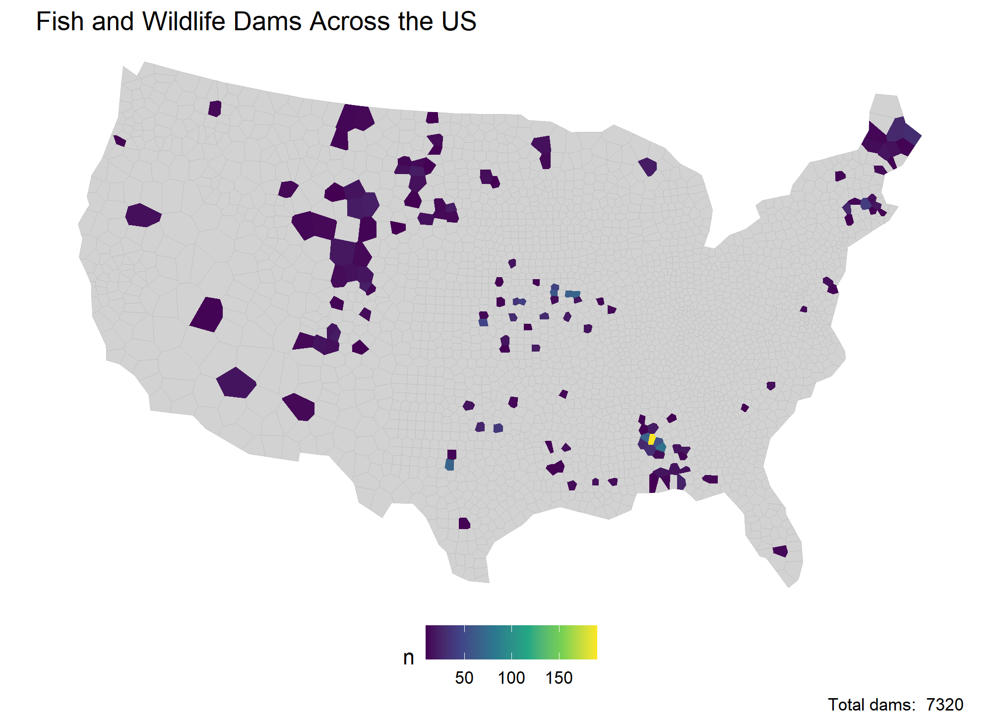
Step 4.3
Comment of geographic distribution of dams you found. Does it make sense? How might the tessellation you chose impact your findings? How does the distribution of dams coincide with other geographic factors such as river systems, climate, etc.?
Flood control dams appear mostly through the center of the country, near the Mississippi River which makes sense to me. There are select other spots, but the highest concentrations lie along this basin. Hydroelectric dams occur on the West coast, and in the Northeast. This also makes sense to me. Navigation dams mostly occur east of the Mississippi as well. I guess this makes sense as most large and navigable rivers occur in this area? Fish and wildlife dams occur in the arid west where more environmental regulation is necessary to ensure environmental sustainability. There is a high concentration in Alabama it appears as well.
Question 5: Identify the largest, at risk, flood control dams in the country
Map the Mississippi River System - Download the shapefile and unzip it into your data directory - Use read_sf to import this data and filter it to only include the Mississippi SYSTEM
states <- AOI::aoi_get(state = "conus") %>%
st_transform(crs = 5070)
ggplot(states) +
geom_sf()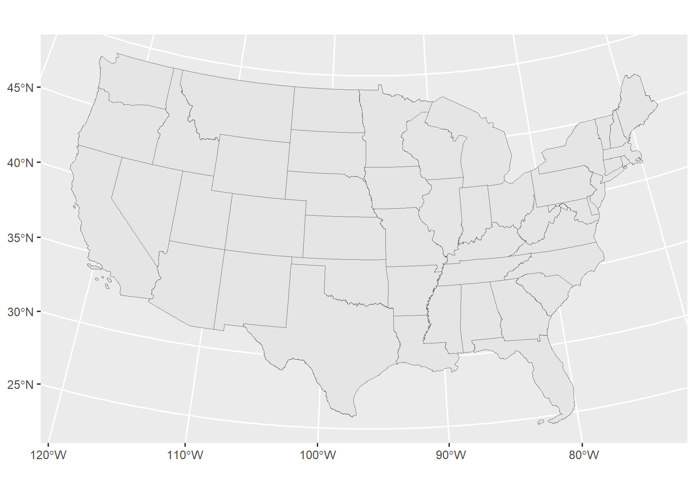
missi <- read_sf('C:/Users/horre/Desktop/csu_523c/data/MajorRivers.shp') %>%
filter(SYSTEM == 'Mississippi') %>%
st_transform(5070)head(missi)
plot(missi)dams_hazard <- dams3 %>%
filter(grepl('F', PURPOSES) == TRUE,
HAZARD == 'H')
pip_hazard <- st_join(vor_conus, dams_hazard) %>%
st_as_sf()
ggplot() +
geom_sf(data = states, fill = NA) +
geom_sf(data = dams_hazard, aes(cex = NID_STORAGE), color = 'red4') +
geom_sf(data = missi, color = 'navy', linewidth = 2) +
labs(title = 'Largest at risk Dam in Each State on the Mississippi River') +
theme_void()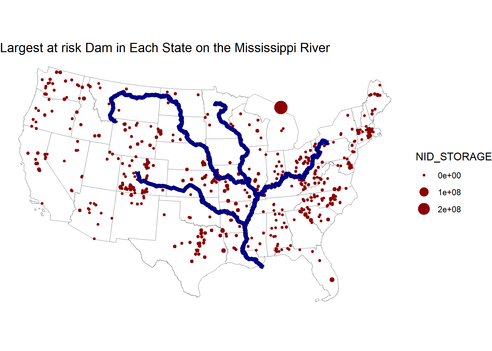
To achieve this:
Create an interactive map using leaflet to show the largest (NID_STORAGE); high-hazard (HAZARD == “H”) dam in each state - The markers should be drawn as opaque, circle markers, filled red with no border, and a radius set equal to the (NID_Storage / 1,500,000)
- The map tiles should be selected from any of the tile providers
- A popup table should be added using leafem::popup and should only include the dam name, storage, purposes, and year completed.
- The Mississippi system should be added at a Polyline feature.